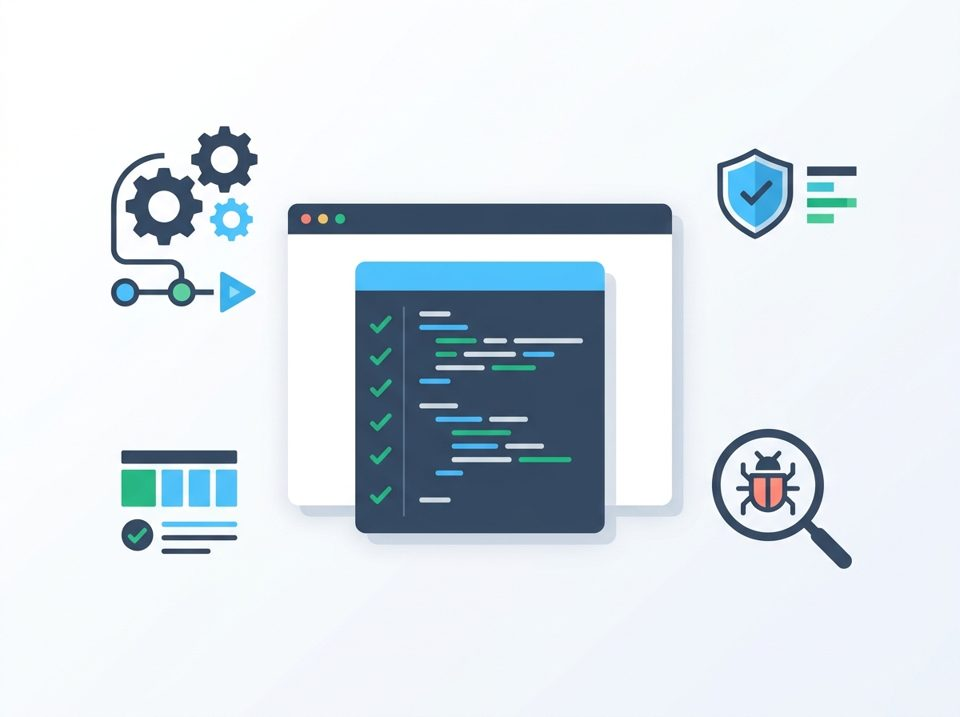

Habilidades Essenciais do Analista de Testes de Software
Para atuar na garantia de qualidade, o profissional combina raciocínio lógico com ferramentas modernas de inspeção e automação. Se você ainda está conhecendo a área, veja primeiro o que faz um analista de testes no dia a dia.

Competências Técnicas (Hard Skills)
Base técnica que sustenta a qualidade em aplicações web, mobile e APIs.
-
Lógica e Código
Lógica de programação e leitura de código (HTML, CSS, JavaScript ou Python).
-
Casos de Teste
Elaboração de casos de teste, critérios de aceite e planos de qualidade.
-
Automação e APIs
Automação de testes web e de APIs com ferramentas como Cypress, Playwright ou Selenium.
-
Inspeção no Navegador
Uso do DevTools para inspecionar responsividade, rede, console e acessibilidade.
Competências Comportamentais (Soft Skills)
Além da parte técnica, a comunicação clara é fundamental para relatar falhas de forma objetiva ao time de desenvolvimento.
-
Pensamento Crítico
Atenção aos detalhes para prever cenários de erro e casos de borda.
-
Empatia com o Usuário
Olhar atento à usabilidade, clareza e acessibilidade em diferentes telas.
-
Trabalho em Equipe
Colaboração próxima com desenvolvedores e organização na documentação de bugs.
Pronto para começar a estudar?
Explore nossa seleção de materiais gratuitos, cursos e panorama salarial na área de QA ou conheça mais sobre o projeto Viva Sua Profissão.